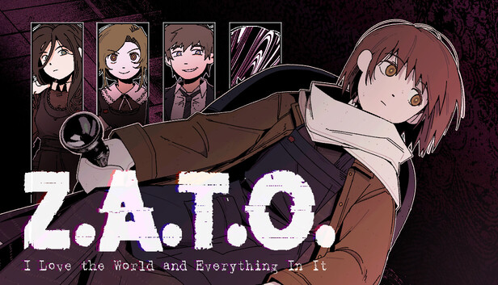

Anime
Serial experiment lain
Este me parece muy interesante el concepto el cual abarca y siento que estaba muy adelantado para la epoca en la cual salio

Monster
Este anime trata sobre un doctor que salva la vida de un niño que resulta ser un asesino en serie, el anime gira en torno a las consecuencias de esa accion y los dilemas morales que esto conlleva.

Novelas Visuales
Z.A.T.O I love the world and everything in it
Esta es de lejos mi novela visual favorita, me agrada mucho su ambientacion, la combinacion de musica, arte y narracion queda perfecta con la historia que cuenta
